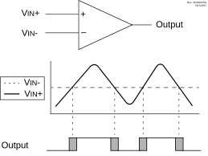

A single comparator is shown in Figure 45-1 along with the relationship between the analog input levels and the digital output. When the analog voltage at VIN+ is less than the analog voltage at VIN-, the output of the comparator is a digital low level. When the analog voltage at VIN+ is greater than the analog voltage at VIN-, the output of the comparator is a digital high level.
